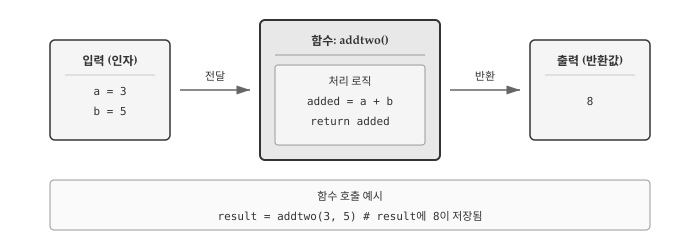
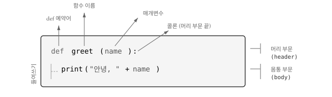
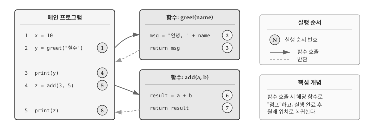
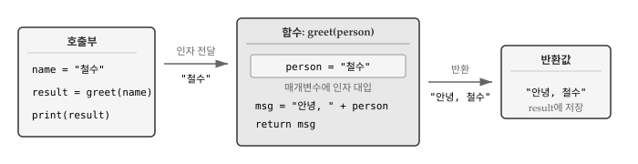
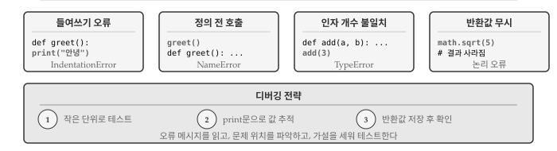

4 함수
프로그래밍에서 반복되는 작업을 효율적으로 처리하는 방법이 필요하다. 같은 계산을 여러 번 수행해야 할 때마다 동일한 코드를 복사해서 붙여넣는 것은 비효율적이고 오류가 발생하기 쉽다. 함수(function)는 특정 작업을 수행하는 코드 블록에 이름을 붙여 재사용할 수 있게 해준다.
그림 4.1 는 함수의 핵심 개념을 보여준다. 함수는 입력(인자)을 받아 정해진 연산을 수행하고 결과(반환값)를 돌려준다. 마치 자판기에 동전을 넣고 버튼을 누르면 음료가 나오는 것처럼, 함수에 값을 전달하면 처리된 결과를 얻는다.

4.1 함수 호출
함수(function)는 명명된 명령어의 집합으로 특정 연산을 수행한다. 함수를 사용하려면 함수 이름 뒤에 괄호를 붙여 호출(call)한다. 이미 함수 호출 예제를 살펴보았다.
type(32) # <class 'int'>함수명은 type이고, 괄호 안의 32가 인자(argument)다. 인자는 함수에 전달하는 입력값으로, 함수가 작업을 수행하는 데 필요한 재료다. type() 함수는 인자의 자료형을 알려주는 결과를 반환(return)한다.
함수는 인자를 “받아서” 결과를 “돌려준다”고 표현한다. 함수가 돌려주는 결과를 반환값(return value)이라고 부른다.
4.2 내장 함수
파이썬에는 직접 정의하지 않아도 바로 사용할 수 있는 내장 함수(built-in function)가 많다. 자주 필요한 기능을 파이썬 개발자들이 미리 만들어 두었기 때문이다.
max()와 min() 함수는 여러 값 중에서 최댓값과 최솟값을 각각 찾아준다.
max(1, 5, 3, 9, 2) # 9min(1, 5, 3, 9, 2) # 1문자열에도 max()와 min()을 적용할 수 있다. 문자열에서는 알파벳 순서(정확히는 유니코드 코드 포인트)를 기준으로 비교한다.
min('Hello world') # ' ' (공백)공백 문자(’ ’)의 유니코드 값이 알파벳보다 작아서 최솟값으로 반환된다.
len() 함수는 객체의 길이를 반환한다. 문자열에 사용하면 문자 개수를 알려준다.
len('Hello world') # 11len('헬로 월드') # 5영문은 공백 포함 11자, 한글은 공백 포함 5자다. len() 함수는 바이트 수가 아니라 문자 개수를 센다.
max, min, len, type 같은 내장 함수 이름을 변수명으로 사용하면 원래 함수를 덮어써서 더 이상 사용할 수 없게 된다.
# 나쁜 예: 내장 함수명을 변수로 사용
max = 100 # 이제 max() 함수를 호출할 수 없다!4.2.1 자료형 변환 함수
한 자료형을 다른 자료형으로 변환하는 내장 함수가 있다. int() 함수는 값을 정수로 변환한다. 변환이 가능하면 정수를, 불가능하면 오류를 발생시킨다.
int('32') # 32int('Hello') # ValueError: 문자열을 정수로 변환 불가int()는 부동 소수점 숫자도 정수로 변환하는데, 소수점 이하를 버린다(반올림하지 않는다).
int(3.99999) # 3int(-2.3) # -2float() 함수는 정수와 문자열을 부동 소수점 숫자로 변환한다.
float(32) # 32.0float('3.14159') # 3.14159str() 함수는 인자를 문자열로 변환한다.
str(32) # '32'str(3.14159) # '3.14159'4.2.2 난수 함수
컴퓨터는 같은 입력에 같은 출력을 내는 결정론적(deterministic) 기계다. 하지만 게임이나 시뮬레이션처럼 예측 불가능한 결과가 필요한 경우도 있다. 이때 의사 난수(pseudorandom number)를 사용한다. 의사 난수는 결정론적 알고리즘으로 생성되지만, 겉보기에는 무작위처럼 보인다.
파이썬에서 난수를 사용하려면 random 모듈을 가져와야 한다. random.random() 함수는 0.0 이상 1.0 미만의 부동 소수점 난수를 반환한다.
import random
for i in range(5):
x = random.random()
print(x)실행할 때마다 다른 숫자가 출력된다. random.randint(a, b) 함수는 a 이상 b 이하의 정수 난수를 반환한다.
random.randint(1, 10) # 1~10 사이 정수 (무작위)random.choice() 함수는 시퀀스에서 무작위로 요소 하나를 선택한다.
parties = ["민주당", "국민의힘", "녹색정의당"]
random.choice(parties) # 리스트에서 무작위 선택4.2.3 수학 함수
과학 계산이나 데이터 분석에서 제곱근, 삼각함수, 로그 같은 수학 연산이 필요할 때가 많다. 파이썬은 math 모듈에 수학 함수들을 모아두었다. 모듈(module)은 관련 함수들을 묶어놓은 파일로, 필요할 때 import문으로 불러와서 사용한다.
import math
math.sqrt(2) # 1.4142135623730951점 표기법(dot notation)으로 모듈 이름과 함수 이름을 연결한다. math.sqrt(2)는 “math 모듈의 sqrt 함수에 2를 전달”한다는 의미다.
삼각함수도 제공된다. sin(), cos(), tan() 등은 라디안(radian) 단위의 각도를 인자로 받는다.
degrees = 45
radians = degrees / 360.0 * 2 * math.pi
math.sin(radians) # 0.7071067811865476\(\sin(45°) = \frac{\sqrt{2}}{2}\)와 일치하는지 확인해보자.
math.sqrt(2) / 2 # 0.7071067811865476math.pi는 원주율 \(\pi\) 값을 약 15자리까지 정확하게 제공한다.
math.pi # 3.141592653589793로그 함수는 지수의 역연산으로, 과학과 공학 분야에서 광범위하게 사용된다. math.log10()은 상용로그(밑이 10)를 계산하고, math.log()는 자연로그(밑이 \(e\))를 계산한다. 오디오 신호의 데시벨(dB) 계산, 지진 강도의 리히터 규모, pH 농도 측정 등이 모두 로그를 기반으로 한다.
signal_power = 9
noise_power = 10
ratio = signal_power / noise_power
decibels = 10 * math.log10(ratio)
print(decibels) # -0.4575749056067512신호 대 잡음비(9/10 = 0.9)를 데시벨로 변환하면 약 -0.46dB이 나온다. 음수가 나오는 것은 신호가 잡음보다 약하다는 의미다.
4.3 함수 정의
파이썬이 제공하는 내장 함수만으로는 모든 문제를 해결할 수 없다. 특정 업무에 맞는 계산이나 반복적으로 수행해야 하는 작업이 있다면 직접 함수를 만들어야 한다. 함수 정의(function definition)는 새 함수의 이름을 짓고, 호출될 때 실행할 문장들을 지정하는 것이다.

그림 4.2 는 함수 정의의 구조를 보여준다. 함수 정의는 크게 머리 부문(header)과 몸통 부문(body)으로 나뉜다. 머리 부문은 def 예약어로 시작해서 함수 이름, 괄호로 감싼 매개변수, 콜론(:)으로 구성된다. 몸통 부문은 머리 부문 아래에 들여쓰기된 문장들로, 함수가 호출될 때 실제로 실행되는 코드다.
def print_lyrics():
print("나는 나무꾼이고, 괜찮아요.")
print("나는 밤새도록 자고, 하루 종일 일해요.")print_lyrics 함수는 매개변수가 없어서 괄호 안이 비어 있다. 함수 이름 규칙은 변수와 같아서 문자, 숫자, 밑줄을 사용할 수 있고, 숫자로 시작할 수 없으며, 예약어는 사용할 수 없다.
함수를 정의하면 같은 이름의 함수 객체(function object)가 생성된다. 함수 객체는 변수처럼 출력하거나 타입을 확인할 수 있다.
print(print_lyrics) # <function print_lyrics at 0x...>
type(print_lyrics) # <class 'function'>함수를 실제로 실행하려면 함수명 뒤에 괄호를 붙여 호출해야 한다. 괄호가 없으면 함수 객체 자체를 참조할 뿐 실행되지 않는다.
print_lyrics()한 번 정의한 함수는 여러 번 호출할 수 있고, 다른 함수 내부에서도 사용할 수 있다. 아래 repeat_lyrics() 함수는 print_lyrics()를 두 번 호출해서 가사를 반복 출력한다.
def repeat_lyrics():
print_lyrics()
print_lyrics()
repeat_lyrics()함수는 호출되기 전에 정의되어야 한다. 다음 코드는 greet() 함수가 정의되기 전에 호출되어 오류를 발생시킨다.
greet() # NameError: 정의 전에 호출
def greet():
print("안녕하세요!")하지만 함수 정의 내부에서 아직 정의되지 않은 함수를 참조하는 것은 괜찮다. 파이썬은 함수를 정의할 때 내부 코드를 실행하지 않고, 호출할 때 실행한다. 따라서 실제 호출 시점에 참조하는 함수가 존재하면 문제없이 동작한다.
def repeat_lyrics():
print_lyrics() # 정의 시점에는 없지만 OK
def print_lyrics():
print("나는 나무꾼이고, 괜찮아요.")
repeat_lyrics() # 호출 시점에는 둘 다 정의됨4.4 실행 흐름
프로그램은 첫 문장부터 시작해서 위에서 아래로 한 문장씩 실행된다. 함수 정의는 실행 순서를 바꾸지 않지만, 함수 내부 문장은 호출될 때까지 실행되지 않는다.

그림 4.3 는 함수 호출 시 실행 흐름을 보여준다. 함수가 호출되면 프로그램은 함수 몸통으로 “점프”해서 모든 문장을 실행한 뒤, 원래 위치로 돌아와서 다음 문장을 계속 실행한다.
함수 내부에서 다른 함수를 호출할 수도 있다. 한 함수 실행 중에 또 다른 함수로 점프하고, 그 함수가 끝나면 돌아오는 식이다. 파이썬은 현재 실행 위치를 정확히 추적하므로, 함수 실행이 끝나면 정확히 떠났던 지점으로 복귀한다.
프로그램을 읽을 때 반드시 위에서 아래로 읽을 필요는 없다. 때로는 실행 흐름을 따라가는 것이 코드 이해에 도움이 된다.
4.5 매개변수와 반환값
함수의 진정한 힘은 매개변수와 반환값에서 나온다. 매개변수를 통해 함수에 다양한 입력을 전달하고, 반환값을 통해 계산 결과를 받아올 수 있다. 같은 함수라도 입력에 따라 다른 결과를 내놓기 때문에, 한 번 작성한 함수를 여러 상황에서 재사용할 수 있다.

그림 4.4 은 함수 호출 시 데이터가 어떻게 흐르는지 보여준다. 호출부에서 인자 "철수"를 전달하면, 함수 내부에서 매개변수 person에 대입된다. 함수가 처리를 마치고 return문을 만나면 반환값 "안녕, 철수"가 호출부로 돌아와 변수 result에 저장된다.
4.5.1 매개변수
매개변수(parameter)는 함수 정의의 괄호 안에 선언하는 변수로, 함수가 외부에서 값을 받아들이는 통로 역할을 한다. 함수를 호출할 때 전달하는 실제 값을 인자(argument)라고 부르며, 인자가 매개변수에 대입되어 함수 내부에서 사용된다.
def print_twice(bruce):
print(bruce)
print(bruce)print_twice 함수는 bruce라는 매개변수를 가진다. 함수를 호출할 때 전달한 인자가 bruce에 대입되고, 함수 몸통에서 두 번 출력된다. 문자열, 숫자, 변수 등 다양한 값을 인자로 전달할 수 있다.
print_twice('Spam') # Spam (두 번 출력)print_twice(17) # 17 (두 번 출력)import math
print_twice(math.pi) # 3.141592653589793 (두 번 출력)인자로 표현식을 전달하면 함수 호출 전에 먼저 평가된다. 'Spam' * 4는 'SpamSpamSpamSpam'으로, math.cos(math.pi)는 -1.0으로 계산된 후 함수에 전달된다.
print_twice('Spam' * 4) # SpamSpamSpamSpam (두 번 출력)print_twice(math.cos(math.pi)) # -1.0 (두 번 출력)변수를 인자로 전달할 수도 있다. 변수에 저장된 값이 매개변수에 복사된다.
half_chicken = "요기, 닭 반마리요"
print_twice(half_chicken) # 요기, 닭 반마리요 (두 번 출력)인자로 전달된 변수명(half_chicken)과 매개변수명(bruce)은 서로 무관하다. 호출 시점에 값이 복사될 뿐, 함수 내부에서는 오직 매개변수명으로만 값을 참조한다. 변수명이 달라도 문제없이 동작하는 이유가 여기에 있다.
4.5.2 반환값
매개변수가 함수로 들어가는 입구라면, 반환값(return value)은 함수에서 나오는 출구다. math.sqrt(), math.cos() 같은 함수는 계산 결과를 반환하므로, 그 값을 변수에 저장하거나 다른 계산에 바로 활용할 수 있다. 결과를 반환하는 함수를 값 반환 함수(fruitful function)라고 부른다.
x = math.cos(0) # 1.0
golden = (math.sqrt(5) + 1) / 2 # 1.618033988749895 (황금비)
print(x, golden)math.cos(0)의 반환값 1.0이 변수 x에 저장되고, math.sqrt(5)의 반환값은 표현식에서 바로 사용되어 황금비를 계산한다. 반환값을 활용하면 함수 호출을 연쇄적으로 연결하거나 복잡한 계산식을 구성할 수 있다.
반면 print_twice() 같은 함수는 화면에 출력하는 동작만 수행하고 의미 있는 값을 돌려주지 않는다. 반환값 없이 동작만 수행하는 함수를 무반환 함수(void function)라고 부른다.
result = print_twice('Bing') # Bing 출력 (두 번)
print(result) # None무반환 함수도 실제로는 None을 반환한다. None은 파이썬에서 “값이 없음”을 나타내는 특별한 값이다. print_twice()의 반환값을 변수에 저장하면 None이 들어간다.
직접 정의한 함수에서 결과를 반환하려면 return 문을 사용한다. return 뒤에 반환할 값을 지정하면, 함수 실행이 즉시 종료되고 해당 값이 호출한 곳으로 전달된다.
def addtwo(a, b):
added = a + b
return added
x = addtwo(3, 5)
print(x) # 8addtwo(3, 5)를 호출하면 a에 3, b에 5가 대입되고, added에 8이 저장된 후 return문이 8을 반환한다. 호출한 곳에서는 반환값 8이 변수 x에 대입된다.
프로그램 규모가 커지면 코드 관리가 어려워진다. 수백 줄의 코드가 한 파일에 쭉 나열되어 있으면 특정 기능이 어디에 있는지 찾기 힘들고, 같은 계산을 여러 곳에서 반복하게 되며, 한 부분을 수정했을 때 다른 부분에 어떤 영향을 미치는지 파악하기 어렵다. 함수는 코드 관리 문제를 해결하는 핵심 도구다.
calculate_tax(income)이라는 함수 호출 한 줄은 세금 계산 로직 10줄보다 의도를 명확하게 전달한다. 함수 이름만 보고도 “소득에서 세금을 계산한다”는 것을 알 수 있기 때문이다. 내부 구현이 복잡하더라도 호출하는 쪽에서는 신경 쓸 필요가 없다. 마치 자동차 운전자가 엔진 내부 작동 원리를 몰라도 운전할 수 있는 것과 같다.
- 가독성: 코드 블록에 의미 있는 이름을 붙여 프로그램 구조를 명확하게 드러낸다.
- 중복 제거: 반복되는 코드를 한 번만 작성하고, 수정할 때도 한 곳만 고치면 된다.
- 분할 정복: 큰 문제를 작은 함수 단위로 나눠서 독립적으로 개발하고 테스트할 수 있다.
- 재사용: 잘 만든 함수는 다른 프로젝트에서도 활용할 수 있다.
4.6 디버깅
함수를 작성하다 보면 예상대로 동작하지 않는 상황을 자주 만난다. 오류 메시지가 뜨기도 하고, 프로그램은 실행되지만 결과가 이상할 때도 있다. 함수 관련 오류는 크게 구문 오류(syntax error)와 논리 오류(logic error)로 나뉜다. 구문 오류는 파이썬이 코드를 해석조차 못하는 경우이고, 논리 오류는 실행은 되지만 의도와 다르게 동작하는 경우다.

그림 4.5 는 함수 작성 시 자주 만나는 네 가지 오류 유형을 보여준다. 들여쓰기 오류와 정의 전 호출은 파이썬이 즉시 오류 메시지를 띄우므로 발견하기 쉽다. 반면 인자 개수 불일치는 실행 시점에, 반환값 무시는 결과를 확인할 때 비로소 드러난다.
4.6.1 들여쓰기 오류
파이썬에서 들여쓰기는 단순한 스타일이 아니라 문법이다. 함수 몸통은 머리 부문보다 반드시 한 단계 안쪽으로 들여쓰기해야 한다. 들여쓰기가 없거나 일관되지 않으면 IndentationError가 발생한다.
def greet():
print("안녕") # IndentationError: expected an indented block더 까다로운 문제는 탭과 공백이 섞인 경우다. 화면에서는 똑같이 보여도 파이썬은 탭(1개)과 공백(4개)을 다르게 인식한다. 어떤 줄은 탭으로, 어떤 줄은 공백으로 들여쓰기하면 TabError나 예상치 못한 동작이 발생한다. 대부분의 코드 편집기는 탭을 공백으로 자동 변환하는 기능을 제공한다. VS Code, PyCharm 같은 IDE에서 자동 변환 기능을 켜두면 들여쓰기 문제를 원천적으로 예방할 수 있다.
4.6.2 함수 정의 전 호출
파이썬 인터프리터는 코드를 위에서 아래로 읽는다. 함수를 정의하기 전에 호출하면, 파이썬은 아직 호출된 함수가 무엇인지 모르기 때문에 NameError를 발생시킨다.
greet() # NameError: name 'greet' is not defined
def greet():
print("안녕")오류 메시지 name 'greet' is not defined는 “greet라는 이름을 모르겠다”는 뜻이다. NameError가 발생하면 두 가지를 확인해야 한다. 첫째, 함수 이름에 오타가 없는지(대소문자 포함). 둘째, 함수 정의가 호출보다 위에 있는지. 특히 여러 파일로 나뉜 프로젝트에서는 import문을 빠뜨렸을 때도 같은 오류가 발생한다.
4.6.3 인자 개수 불일치
함수를 정의할 때 매개변수를 2개 선언했는데 호출할 때 인자를 1개만 전달하면 TypeError가 발생한다. 반대로 인자를 너무 많이 전달해도 마찬가지다.
def addtwo(a, b):
return a + b
addtwo(3) # TypeError: addtwo() missing 1 required positional argument: 'b'
addtwo(1,2,3) # TypeError: addtwo() takes 2 positional arguments but 3 were given오류 메시지가 상세해서 문제 파악이 쉽다. missing 1 required positional argument: 'b'는 “필수 인자 b가 빠졌다”는 뜻이고, takes 2 positional arguments but 3 were given은 “2개를 받는데 3개가 전달됐다”는 뜻이다. 함수를 호출할 때는 정의를 확인해서 매개변수 개수와 순서를 맞춰야 한다.
4.6.4 반환값 무시
값 반환 함수를 호출하고 결과를 변수에 저장하지 않으면, 계산은 수행되지만 결과가 사라진다. 파이썬이 오류를 띄우지 않기 때문에 논리 오류에 해당한다.
math.sqrt(5) # 2.2360...이 계산되지만 어디에도 저장되지 않음초보자가 자주 하는 실수는 함수가 값을 “자동으로 기억한다”고 생각하는 것이다. 함수는 호출될 때마다 독립적으로 실행되고, 반환값을 명시적으로 받아두지 않으면 휘발된다. 결과를 사용하려면 반드시 변수에 저장하거나 다른 표현식에서 바로 활용해야 한다.
result = math.sqrt(5) # 변수에 저장해서 나중에 사용
print(math.sqrt(5)) # 바로 출력 함수에 전달
area = math.pi * math.sqrt(5) ** 2 # 표현식에서 바로 사용함수가 예상대로 동작하지 않을 때 다음 순서로 점검한다.
1단계: 작은 입력으로 테스트 함수를 작성한 직후, 결과를 예측할 수 있는 간단한 값으로 테스트한다. addtwo(1, 2)가 3을 반환하는지, greet("철수")가 “안녕, 철수”를 출력하는지 확인한다.
2단계: print문으로 값 추적 함수 내부에서 변수 값이 어떻게 변하는지 확인하려면 print()를 삽입한다. 매개변수가 제대로 전달됐는지, 중간 계산 결과가 맞는지, 반환 직전 값이 예상과 일치하는지 출력해본다.
3단계: 반환값 저장 후 확인 함수 호출 결과를 변수에 저장하고 print()로 출력해서 예상값과 비교한다. 예상과 다르면 2단계로 돌아가 함수 내부를 추적한다.
4.7 AI와 함께하는 함수
AI에게 함수 작성을 요청할 때는 입력(매개변수), 출력(반환값), 수행할 동작을 명확히 명시해야 한다. “계산 함수 만들어줘”보다 구체적인 요구사항을 담은 프롬프트가 더 정확한 코드를 생성한다.
두 숫자를 받아 사칙연산 결과를 반환하는 함수를 작성해줘.
- 함수명: calculate
- 매개변수:
* a (숫자)
* b (숫자)
* operator (문자열: '+', '-', '*', '/')
- 반환값: 계산 결과 (숫자)
- 예외 처리:
* 나누기에서 b가 0이면 None 반환
* 잘못된 연산자면 None 반환
- 예시: calculate(10, 3, '+') → 13함수 시그니처(signature)—이름, 매개변수, 반환값—를 프롬프트에 명시하면 AI가 생성한 코드를 검증하기 쉽다. 매개변수 이름이 의도대로인지, 반환값 타입이 맞는지, 예외 상황을 처리하는지 확인하면 된다.
AI가 생성한 함수를 검토할 때 확인할 사항은 다음과 같다.
- 매개변수 검증: 예상치 못한 입력(None, 빈 문자열, 음수 등)에 대한 처리
- 반환값 일관성: 모든 경로에서 같은 타입을 반환하는지
- 경계값 처리: 최솟값, 최댓값, 0 등 특수 값에서 동작 확인
- 부작용 여부: 함수가 전역 변수를 변경하거나 예상치 못한 출력을 하지 않는지
AI가 생성한 함수가 복잡할 때, 테스트 케이스 생성을 요청할 수 있다.
위 calculate 함수에 대해 pytest 테스트 코드를 작성해줘.
다음 케이스를 포함해야 해:
- 정상 동작: 각 연산자별 기본 테스트
- 경계값: 0으로 나누기, 음수 연산
- 예외 상황: 잘못된 연산자 입력AI가 테스트 코드를 생성하면 pytest로 실행해서 함수의 정확성을 검증할 수 있다. 테스트가 실패하면 어느 입력에서 문제가 생겼는지 바로 알 수 있다.
함수 분해(decomposition)도 AI에게 도움을 요청할 수 있다. 긴 코드를 여러 함수로 나누는 것은 설계 판단이 필요한 작업인데, AI가 합리적인 분해 방안을 제시해준다.
아래 코드를 여러 함수로 분해해줘. 각 함수는 한 가지 일만 해야 해.
[긴 코드 붙여넣기]
함수별로 다음을 명시해줘:
- 함수명 (동사로 시작)
- 매개변수와 반환값
- 한 줄 설명AI가 제안한 함수 구조가 마음에 들지 않으면 “더 작은 단위로 나눠줘” 또는 “validate_input과 check_format은 하나로 합쳐줘”처럼 피드백을 주면서 반복적으로 개선할 수 있다.
💡 생각해볼 점
함수는 프로그래밍의 핵심 도구다. 코드를 함수로 구조화하면 복잡한 문제를 작은 단위로 분해하여 해결할 수 있다. 각 함수는 하나의 명확한 목적을 가지고, 입력을 받아 출력을 내놓는 독립적인 단위로 동작한다.
좋은 함수는 한 가지 일을 잘 수행한다. 함수가 너무 많은 일을 하면 이해하기 어렵고 재사용하기도 힘들다. calculate_tax_and_send_email_and_update_database()보다는 calculate_tax(), send_email(), update_database()로 분리하는 것이 낫다.
함수 이름은 동사로 시작하는 것이 관례다. get_user(), calculate_sum(), is_valid() 등 동작을 나타내는 이름이 좋다. 이름만 보고도 함수가 무엇을 하는지 짐작할 수 있어야 한다.
매개변수와 반환값의 관계를 명확히 이해하는 것이 중요하다. 매개변수는 함수 외부에서 내부로 값을 전달하는 통로이고, 반환값은 함수 내부에서 외부로 결과를 전달하는 통로다. 입력과 출력, 단 두 개의 통로만으로 함수는 외부 세계와 소통한다.
앞으로 더 복잡한 프로그램을 작성하면서 함수의 진가를 경험하게 될 것이다. 반복문, 조건문과 함께 함수를 활용하면 어떤 복잡한 문제도 체계적으로 해결할 수 있다.